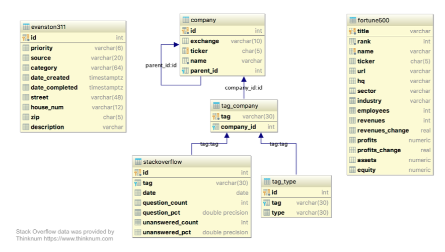
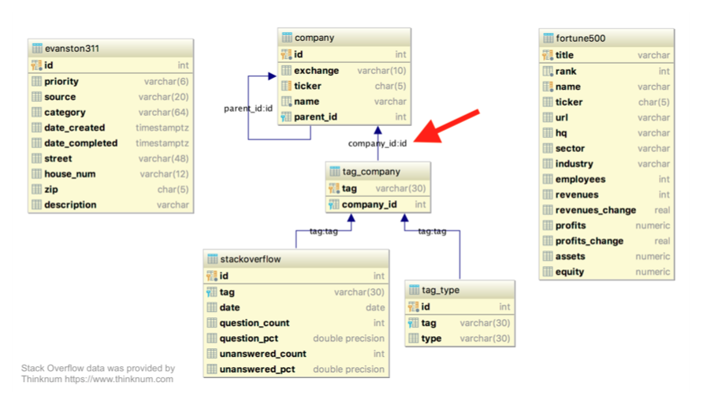
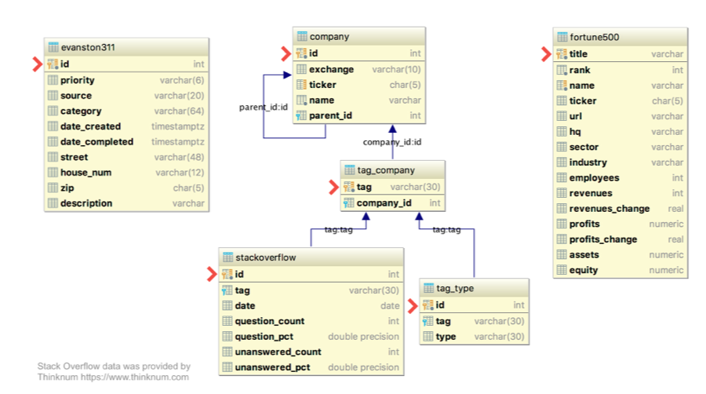

Exploratory Data Analysis in SQL#
Database#
PostgreSQL is one of many different database system.
Database can be seen as a plave where you can store data.
A database scheme can be seen as the following:

We we can se the different tables and how they are linked togeather.
From here we can extract some of the values with SQL.
SELECT * FROM
COMPANY
LIMIT 5
Joins#
You can join table from different tables:
SELECT company.name
-- Table(s) to select from
FROM company
inner join fortune500
on company.ticker=fortune500.ticker;
We can use other joins as well.
Relationsship between tables is based on the different keys. Foreign keys are those reference orther row. So we can combine tables. They come from a primary key, which is unique.

Primary keys:

You often need to join multiple tables togeather to answaer different questions as What is the most common stackoveflow tagtype?
-- Select the 3 columns desired
SELECT name, tag_type.tag, tag_type.type
FROM company
-- Join the tag_company and company tables
INNER JOIN tag_company
ON company.id = tag_company.company_id
-- Join the tag_type and company tables
INNER JOIN tag_type
ON tag_company.tag = tag_type.tag
-- Filter to most common type
WHERE type='cloud';
Coalesce#
The coalesce() function can be useful for specifying a default or backup value when a column contains NULL values.
coalesce() checks arguments in order and returns the first non-NULL value, if one exists.
coalesce(NULL, 1, 2) = 1
coalesce(NULL, NULL) = NULL
coalesce(2, 3, NULL) = 2
In the fortune500 data, industry contains some missing values. Use coalesce() to use the value of sector as the industry when industry is NULL. Then find the most common industry.
-- Use coalesce
SELECT coalesce(industry, sector, 'Unknown') AS industry2,
-- Don't forget to count!
count(*)
FROM fortune500
-- Group by what? (What are you counting by?)
GROUP BY industry2
-- Order results to see most common first
ORDER BY count DESC
-- Limit results to get just the one value you want
LIMIT 1;
CAST()#
By this function we can voncer variable to different types.
select
cast (value as new_type)
from data
Use can use :: as the same:
select
value::new_type
from data